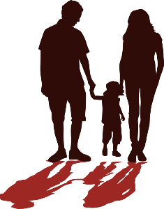

Привет меня зовут Боня, я родилась от неизвестной кошки и не помню свою маму. Я жила как бродячая кошка, пряталась от уличных собак. Искала еду в мусоре , а иногда меня подкармливали люди.

Я мечтала о теплом и уютном доме. Пряталась от дождя и ветра в подвалах. Так как я родилась в начале лета, погода была благоприятна для хорошего роста. Меня нашли добрые люди и отнесли в приют
В приюте я была не долго , как-то пришла семья. Мужчина был большой и страшный он держал на руках маленького человека, а девушка разговаривала с хозякой приюта о чем то. Ну я вам не могу сказать точно я не знаю человечий язык
А потом меня взяла на руки девушка и я прижаась к ней и замурлыкала , на руках у нее было очень тепло и приятно, она меня гладила и что то говорила мужчине. Потом они начали выбирать всякие кошачьи игрушки и конечно же корм. И я поняла что меня выбрали и хотят забрать к себе!